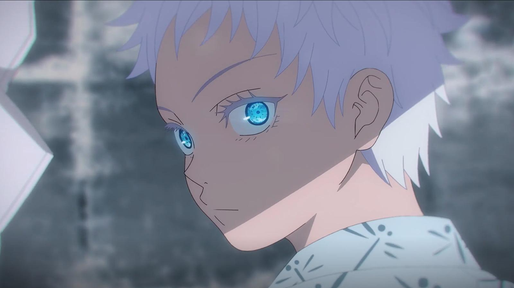
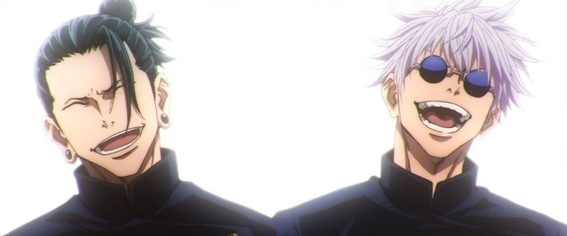
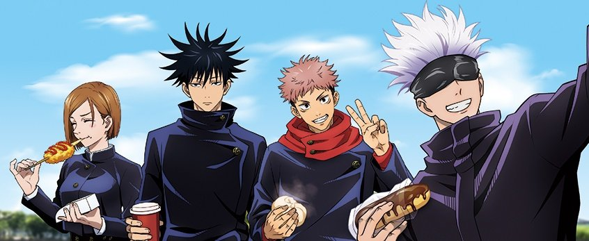

The birthday of Gojo Satoru is Novermber 7th in 1989. He’s 28 years old in the Jujutsu Kaisen story. He was born as a member of the Gojo family, one of the biggest three Jujutsu sorcerer families. It’s not described at all about the members of the Gojo family other than Satoru. So it’s unknown what kind of people his parents are, and if he has siblings.As you know, he possessed Rikugan (six eyes) from his birth. Its power was exceptional and he was already put up more than a hundred million yen bounty when he was a kid. Many evil Curse users tried to kill him, but little Gojo saw through all of them and gave them fear.When Gojo was a high school student, he hung out with Geto Suguru, and they were known as “the strongest two” in the Jujutsu society. Gojo still calls him “my only best friend”. Gojo still calls him “my only best friend.”When they were in their second year at high school, a mission was given to them to guard Amanai Riko and take her to Tengen. Gojo and Geto protected her and succeeded to arrive at the destination, but suddenly attacked by Fushiguro Toji (Megumi’s father) and got into a desperate situation.Gojo was thought to be dead, but he obtained Hanten Jutsushiki (reverse cursed technique) between life and death. Cured his body with the Hanten Jutsushiki, Gojo went to Toji and beat him. Toji lost his life and left word that he had a son, he has a talent for Jujutsu and would be sold to the Zenin family shortly. The son is Fushiguro Megumi. This is how Gojo knew Megumi and later he made the deal canceled between Toji and the Zenin family.One year after the Tengen and Riko incident, both Gojo and Geto became special-grade Jujutsu sorcerers.Gojo also had disaffection against the current Jujutsu society. He became a teacher of Tokyo Jujutsu high school to solve the problem in a different way from Geto. He tried to raise young Jujutsu sorcerers  and change the Jujutsu world fundamentally. As a part of that, he went to see Megumi and invited him to the Tokyo high.